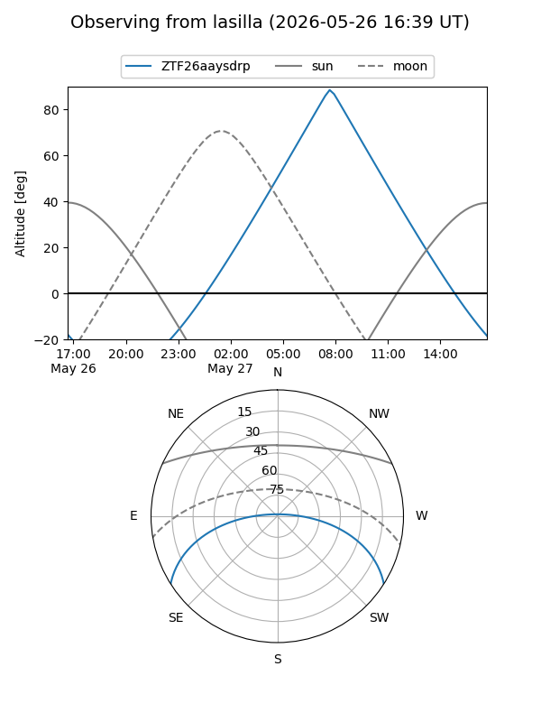
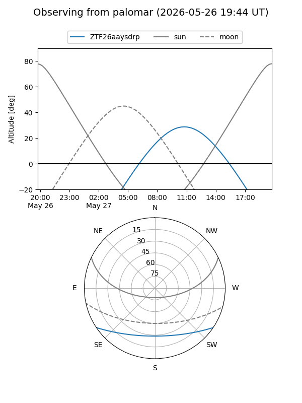

ZTF26aaysdrp
Target ZTF26aaysdrp at 2026-05-27 12:27
Aliases and brokers:
lsst-FINK: link
lsst-Lasair: link
lsst-ALeRCE: link
ztf-FINK: link
ztf-Lasair: link
ztf-ALeRCE: link
alt names
ZTF26aaysdrp (ztf,fink_ztf)
Coordinates:
equatorial (ra, dec) = 289.1716,-27.90560
equatorial (HMS+DMS) = 19:16:41.17,-27:54:20.15
galactic (l, b) = (9.9660,-17.45031)
Flags:
Photometry:
last ztfg=19.93, ztfr=19.49
1 ztfg, 1 ztfr detections
Lightcurve
Visibility


Additional plots